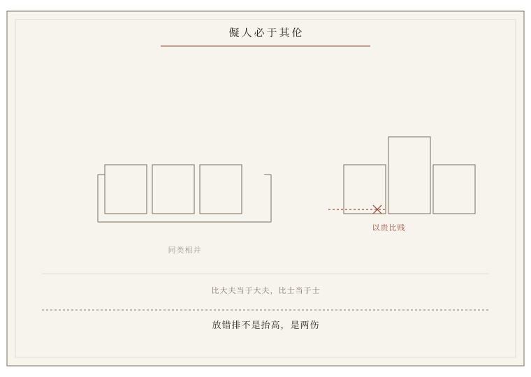

曲礼下 · 二·六十三 · 第 186 课
比人必以其类：比大夫当于大夫，比士当于士。注「儗犹比也。伦犹类也……不以其类，则有所亵」。
说什么事：拿人作比，也有一把尺。
落在哪一层：礼，兼及礼意。论比类之敬。
为何编在此位：上节论药之慎，此节论言之慎。皆细事，皆关分寸。
【经】儗人必於其倫。
【注】儗猶比也。倫猶類也。比大夫當於大夫，比士當於士，不以其類，則有所褻。
【疏】儗，比也。伦，匹类也。凡欲比方于人，当以类相并，不得以贵比贱，则为不敬也。
儗 注「犹比也」。比拟、比方。
伦 注「犹类也」。同类、匹类。
亵 注「有所亵」。轻慢、不敬。
称道、比拟一个人，必须用与他同类的人来比。
一句话：比人要有类。以贵比贱，或以贱比贵，都不是称赞，是失礼。疏只用一句断语——「则为不敬」。
第一层 比即定位 比拟不是修辞，是把一个人放进某一排。放错了排，就是移动了他的位次。
第二层 同类的窄义 注说得极具体：比大夫当于大夫，比士当于士。礼的「类」不是气质相近，是爵位相等。
第三层 不敬之由 疏「以贵比贱，则为不敬」。表面看是抬高了贱者，实则两伤：贱者被置非分，贵者被降等。故礼两禁之。
第四层 一句之重 此节在全卷中最短，只六字。然而后世「不伦不类」一词，正从此出。礼的一句短语，能活两千年。
与今日何干 夸人也要挑对参照。用错了参照，好意会变成轻慢。
| 左 | 右 |
|---|---|
| 儗人必于其伦 | 儗，比也；伦，类也 |
| 比大夫当于大夫 | 比士当于士 |
| 不以其类 | 则有所亵 |
| 以贵比贱 | 则为不敬 |
| 六字成节 | 全卷最短 |
| 伦＝类 | 非伦理之伦 |
画两列等高的小方牌，每列三枚、上下对齐成排。左列三牌形体相同，牌间以短横相连（示「同类相并」）；右列一牌明显高于其余二牌，且与左列之间画一道短斜线、线端作叉（示「以贵比贱」之禁）。两列之间留白。不写文字。赭色只用在右列那枚较高的牌与那道带叉的斜线。
